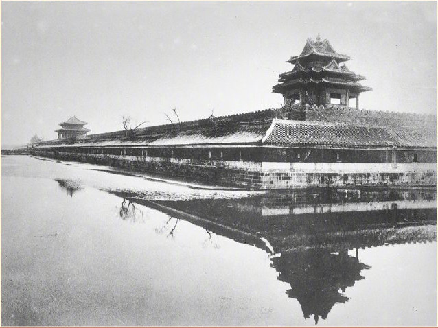
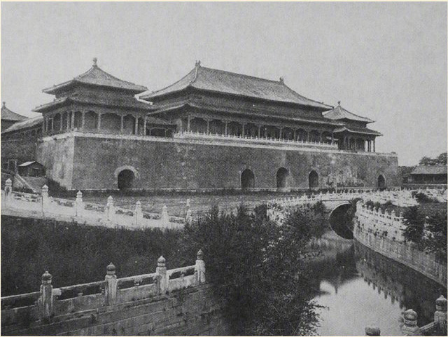
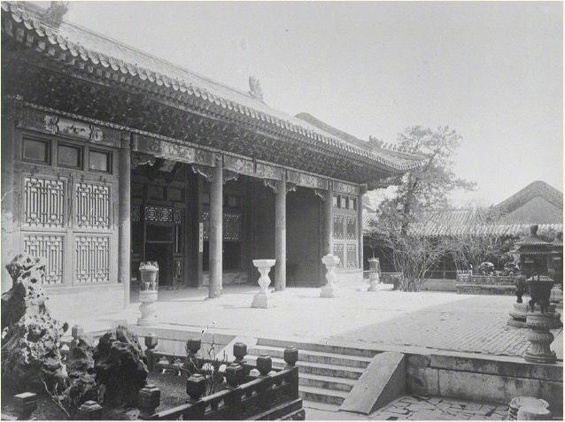
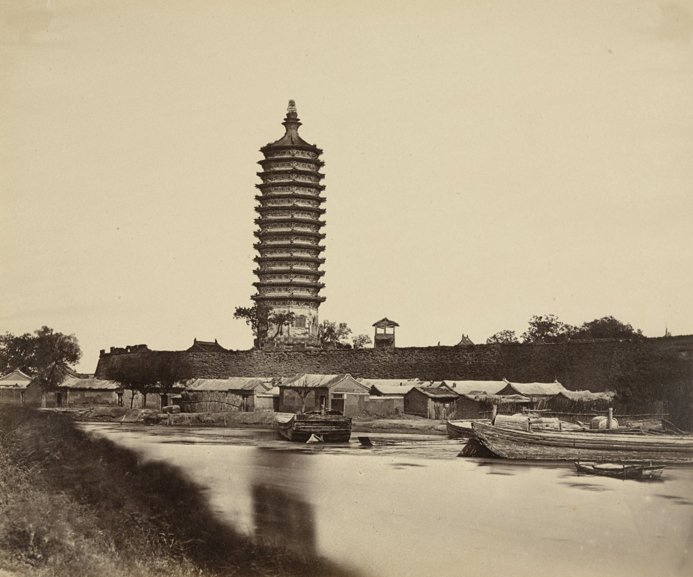
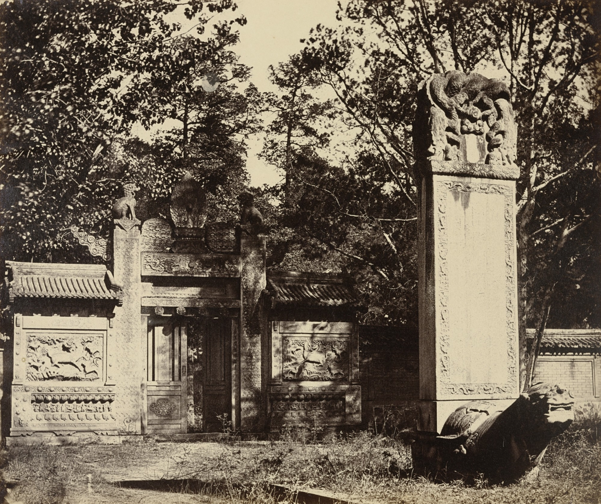

Hall of Supreme Harmony

Hall of Military Prowess

Northwest Turrets
Northwest Turrets

Jing Shan

Yan Xi Palace

Meridian Gate
Meridian Gate

Taihe Gate Square

Hall of Imperial Models

Yi He Xuan
Yi He Xuan
Felice Beato. Bridge in Confucious Temple, Canton. April 1860 | MoMA
Felice Beato. Name Hui Tuk Kung, Canton. April 1860 | MoMA
Early photographs of the architecture and culture of Peking in the 1870s.
Felice Beato. Exterior of the Tomb at the Depot Near Pekin, October 1860
Felice Beato. Street and Shops in the Tartar City of Pekin, October 1860
Felice Beato. Head Quarter Staff, Pehtang Fort August 1, 1860
Felice Beato. Name Hui Kung Temple, Canton April 1, 1860
Felice Beato. Arch in Confucius Temple, Canton April 1860
Felice Beato. East Street from Yamun, Canton April 1860
Felice Beato. Five Genii Temple, Canton April 1860
Felice Beato. East Street from the Treasury, Canton April 1860
Felice Beato. Interior of the Angle of North Fort Immediately after the Capture 1860
Felice Beato. Five Storied Pagoda, Canton April 1860
Felice Beato. Entrance to Treasury, Canton April 1860
Felice Beato. Shuy Yiet Koon, North Street, Canton April, 1860
Felice Beato. Imperial Summer Palace Before the Burning, Yuen Ming Yuen, October 18, 1860
Felice Beato. Imperial Winter Palace -- Pekin October 29, 1860
Felice Beato. Head Quarter House, 1st Division, Pehtang, China 1860

Felice Beato. Tung Chow Pagoda September 23, 1860
Felice Beato. Tung Chow Pagoda September 23, 1860
Felice Beato. Temple of Confucius, Pekin October 1860
Felice Beato. Temple of Confucius, Canton April 1860
Felice Beato. Temple in North Street, Canton April 1860
Felice Beato. Chinese Merchant's House, Canton April 1860
Felice Beato. Treasury Street, Canton April 1860
Felice Beato. Arch in the Lama Temple Near Pekin October 1860
Felice Beato. Nine-Storied Pagoda and Tartar Street, Canton April 1860
Felice Beato. Tibetan Monument in the Lama Temple, Pekin October, 1860

Felice Beato. Carved Tomb at the Depot Near Pekin, The Place Where the Guns and Ammunition was (sic) Left When the Army Marched to Pekin October 1860
Felice Beato. Carved Tomb at the Depot Near Pekin, The Place Where the Guns and Ammunition was (sic) Left When the Army Marched to Pekin October 1860
Felice Beato. Interior and Arches of the Temple of Heaven, Where the Emperor Sacrifices Once a Year in the Chinese City of Peking October 1860
Felice Beato. Temple of Heaven from the Place Where the Priests are Burnt in the Chinese City of Pekin October 1860

Felice Beato. View of the Imperial Summer Palace Yuen Ming Yuen After the Burning, Taken from the Lake, Peking October 1860
Felice Beato. Sacred Temple of Heaven Where the Emperor Sacrifices Once a Year in the Chinese City, Pekin October 1860
Felice Beato. Top of the Wall from Anting Gate. Pekin Taken Possession by English and French Troops October 21, 1860
Felice Beato. View of the Summer Palace Yuen Ming Showing the Pagoda Before the Burning, Pekin October,1860
Felice Beato. Anting Gate of Peking After the Surrender, English and French Troops Take Possession October 21, 1860
Felice Beato. Tomb near Palichiao, the Scene of the Commencement of the Attack on September 21st 1860
Felice Beato. Arch to the Memory of Virtuous Women, Tartar Quarter, Canton April 1860
Felice Beato. The Great Imperial Palace Yuen Ming Yuen Before the Burning, Pekin October 18, 1860
Felice Beato. Mosque Near Pekin Occupied by the Commander in Chief and Lord Elgin October,1860
Felice Beato. Interior of Pehtang Fort Showing the Magazine and Wooden Gun August 1, 1860
Felice Beato. Interior of the North Fort Showing the Chinese Encampment August 21, 1860
Felice Beato. Top of the Wall of Pekin taken Possession of on the 21st October 1860, showing Chinese Guns Directed Against our Batteries October 21,1860
Ancient chinese funiture
Felice Beato. Pagoda Up in the Hill of Summer Palace Yuen Ming Yuen, Pekin, October 18th, 1860. 1860 | MoMA
The Chinese architectural design culture that is gradually lost @Chineseart
Felice Beato. Chinese Theatre, Canton. April 1860 | MoMA
Smoking Opium | Opium Smoking in China circa 1890
Felice Beato. The Great Imperial Palace, Pekin October 29, 1860
Emperor
Imperial Concubine
The Empress Dowager Cixi, China, Qing dynasty.
A luxurious and ornately decorated opium smoking room, possibly inside one of the “flower boat” that could be hired for a night of opium smoking on the Pearl River. The opium bed is at the back of the room. Circa 1880.
Photo from album "China 1872" on Yandex.Disk.
Empress Dowager Cixi poses with her court attendants and the Guangxu Emperor's empress.